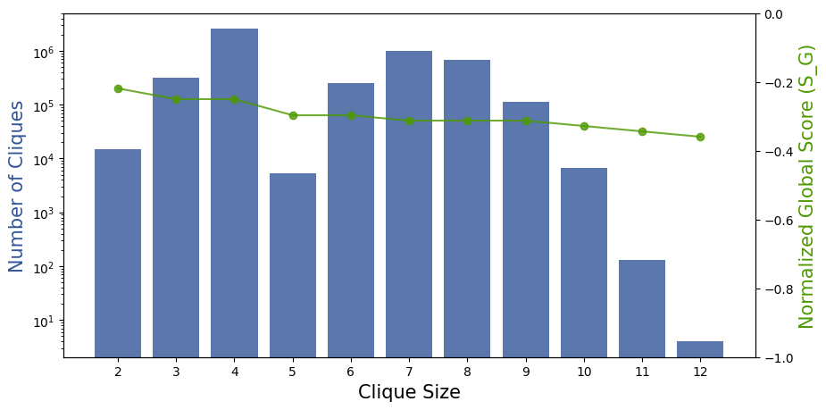
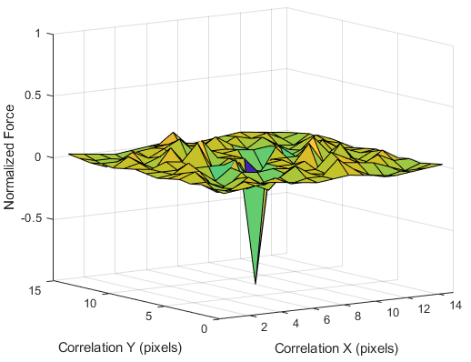

Publication
Martin Nisser, Yashaswini Makaram, Faraz Faruqi, Ryo Suzuki, Stefanie Mueller
Selective Self-Assembly using Re-Programmable Magnetic Pixels
In Proceedings of
IROS ’22.
PDF
Video
Video
Selective Self-Assembly using Re-Programmable Magnetic Pixels
Figure 1. We enable stochastic self assembly using inexpensive ($0.23) cubic modules. (Above, right) We accomplish this by magnetically programming module faces with uniquely mating pairs of encodings based on Hadamard matrices, and show bounds on their performance. (Below, right) Key to the modules' success is their ability to attract strongly to their mates, while remaining agnostic in all other translations, rotations, and to non-mating modules.
This paper introduces a method to generate highly selective encodings that can be magnetically "programmed" onto physical modules to enable them to self-assemble in chosen configurations. We generate these encodings based on Hadamard matrices, and show how to design the faces of modules to be maximally attractive to their intended mate, while remaining maximally agnostic to other faces. We derive guarantees on these bounds, and verify their attraction and agnosticism experimentally. Using cubic modules whose faces have been covered in soft magnetic material, we show how inexpensive, passive modules with planar faces can be used to selectively self-assemble into target shapes without geometric guides. We show that these modules can be easily re-programmed for new target shapes using a CNC-based magnetic plotter, and demonstrate self-assembly of 8 cubes in a water tank.
Introduction
Modular self-assembly is a parallel process for the bottom-
up fabrication of arbitrarily complex geometries from a set
of disjoint modules. At the molecular scale, self-assembly
is effectively used in nature to assemble complex biological
structures [1], and formal models evaluating the power of
self-assembly have proven it to be Turing-universal. Seek-
ing to harness its capabilities, engineers have used self-
assembly across scales to create microstructured materials
with designed optical and mechanical properties at the μm-
scale [2], to self-assembled structures at the mesoscale [3]
up to aerial self-assembly of structures at the m-scale [4].
As an alternative to automating the assembly of robots in a
top-down manner [5], reconfigurable robotics has explored
bottom-up self-assembly in two forms, active and passive.
Active self-assembly by modular self-reconfigurable
robots (MSRR) involves modules that modulate their behav-
ior online in order to locate, position and bond themselves
to their neighbors, for which each module requires embed-
ding with computation, sensing and actuation. Because most
systems choose cubic modules to facilitate tessellation, a key
discriminator between systems is often the actuation, which
include electropermanent magnets [6], electromagnets [7],
[8], momentum wheels [9], [10], and COTs servos or motors
[11]. While active assembly has been used to successfully
reconfigure a variety of robotic systems, it is these actuators
that are typically the most significant challenge to scaling
systems up in number and down in size due to the cost and
complexity of embedding them into individual modules [12].
In contrast, passive self-assembly obviates the need for
emdedded acuation and control. Instead, system actuation
is outsourced to an external excitation, and in the case
of stochastic self-assembly [13], this excitation requires no local control and is governed instead only by global
parameters such as excitation magnitude. Stochastic assem-
bly sacrifices efficiency and predictability for advantages in
cost, complexity and scale; by enabling the environment to
actuate reconfiguration, it trades off deterministic assembly
times of individual modules for statistical assembly rates of
the collective. To assemble stochastically, modules require
pre-programming to enforce correct mating during random
collisions with their intended mate. This programmed speci-
ficity between pairs of mating faces is typically achieved
via minimization of free surface energy via topology [14],
wettability [15], magnetic forces [16] or electrostatic [2]
interaction. While the wider scientific community has often
been interested in constraining the self-assembly problem to
2D, for instance by using a shaker table [17], roboticists
have leveraged liquid tanks to study assembly in 3D. Flu-
idic assembly at the mesoscale has become a particularly
widely studied problem in robotics [12], [18]–[22]. Exist-
ing stochastically self-assembling modules typically include
two features to enable assembly: first, embedded magnets
that generate near-field forces to bring modules close, and second, selective geometry on module faces that encodes
the specificity to only permit bonds between mating pairs
[14], [17], [23], [24]. However, three key challenges remain
for the development of stochastic self-assembling systems:
(1) scalability that shows how modules can be made both
numerous and small; (2) selectivity guarantees that help
bound module misassembly; and (3) reconfigurability that
let modules acquire different target shapes.
(1) Scalability: To assemble arbitrarily complex geome-
tries, encodings for 3D modules must support selectivity
great enough to permit uniquely mating pairs of modules in
the hundreds or even thousands. In addition, modules must
be inexpensive and simple enough to be fabricated in these
quantities. Due to this dual problem, a significant corpus of
previous research demonstrates the stochastic self-assembly
for tiled 2D arrays, such as chessboards [2], [23], [25], with
only two module types where each module is selective to
entirely half of all modules in the set. On the other hand,
the individual fabrication of heterogeneous module topolo-
gies with manually embedded permanent magnets poses a
significant challenge to scalable fabrication.
(2) Selectivity guarantees: Because magnet arrangements
typically used to generate near-field forces are poorly dis-
criminating to each other, this framework often leads to
misassemblies, because near field forces between both mat-
ing and non-mating face magnets are equally strong. In
addition, protruding geometrical features used for selectivity
can lead to ”jamming” by obstructing assembly paths [23],
and bounds on the expected misassembly rate between geo-
metrically dissimilar modules may be difficult to compute.
(3) Reconfigurability: To date, structures self-assembled at
the mesoscale are not reconfigurable. Because module selec-
tivity is achieved by fabricating individualized geometries,
any set of fabricated modules encode only a single target
shape (or single set, for non-deterministic encodings). Such
modules are therefore unable to be ”re-programmed” to self-
assemble new target shapes: new shapes require a unique batch of modules to be fabricated from scratch, inhibiting
their utility and increasing their potential unit cost.
Figure 2. Overview of our stochastic self assembly approach. (Left) Magnetic Pixels: Cubic modules are programmed with
matrices of magnetic pixels. These permit module faces to mate selectively to assemble target geometries. 3x3 Matrices shown
for clarity; our modules utilize 8x8. (Center left) Scalability: Our binary-valued, 8x8 matrices can encode 264 module faces
with unique permutations, and modules are inexpensive ($0.23). (Center right) Selectivity Guarantees: We leverage Hadamard
matrices to encode magnetic pixels on faces with 2 criteria. "Locally", mating faces attract in only one configuration;
"globally", non-mating faces attract in no configuration. (Right) Reconfigurability: Encodings are "programmed" as magnetic
pixels using magnets installed on a 3-axis CNC. Modules can be re-programmed to self assemble into new target geometries
In this paper, we introduce a method to design and
”program” selective encodings [26] onto cubic modules in
a way that addresses all three challenges above (Fig. 2). We
program module faces with patterns of magnetic pixels which
can attract or repulse pixels of another face (Fig. 2 left), and
if the number of pixels in attraction match those in repulsion,
the faces are agnostic to each other. Using this observation,
we show how to program modules with encodings that allow
them to selectively mate with other cubes to self assemble
in a unique target structure. Formulated as matrices, we
demonstrate the number of unique encodings that can be
programmed given criteria on attraction and agnosticism.
Our modules consist of PLA cubes, with squares of
soft magnetic material (inexpensive COTS fridge magnets)
bonded to their sides (Fig. 2 center left). The encodings on
these faces generate both near-field forces and selectivity.
This selectivity lets us use homogeneous cubic modules
with planar faces, making modules both non-jamming and
inexpensive to mass fabricate across scales. Key to our ap-
proach is the generation of selective encodings, for which we
leverage Hadamard matrices (Fig. 2 center right), and similar
procedures may have been used to create industrial-grade
magnets with tailored selectivity properties in industry [27].
The two polarities of the magnetic pixels we encode onto
faces correspond to elements of these binary-valued matrices.
Our matrices enforce two key criteria. A local criterion
dictates behavior between faces intended to mate. If every
pixel on one face, face A, is magnetically opposite to pixels
on another, then we call that face its mate, A’. These faces
thus form a maximally attractive mating pair. Our matrix
pairs are designed to exhibit maximal attraction in this one
configuration, while placing guarantees on agnosticism in all
other translations and rotations. A global criterion dictates
behavior between two faces not intended to mate. For this,
we ensure that any given matrix pair, A and A’, cannot mate with any other faces B, B’, C, C’ etc., in any configuration,
and we place guarantees on this agnosticism. We further
demonstrate how to ”program” module faces using a sim-
ple magnetic plotter consisting of two oppositely oriented
permanent magnets affixed to a 3-axis CNC (Fig. 2 right).
Crucially, these soft magnetic faces are re-programmable,
and thus modules can be repeatedly re-programmed with
new encodings in order to self-assemble into new target
geometries in 3 dimensions. Finally, we design and fabricate
a set of 8 modules and demonstrate their stochastic self-
assembly in a water tank.
The paper is structured as follows. We begin by intro-
ducing a procedure to generate selective magnetic encod-
ings, and derive bounds on the number of modules that
can be utilized given a threshold on agnosticism between
programmed encodings. We describe the physical modules
themselves, and the magnetic plotting technique used to pro-
gram them. We demonstrate our ability to make predictions
with regard to the attraction and agnosticism between various
magnetic encodings, and verify these experimentally. Finally,
we demonstrate stochastic self-assembly of our system using
8 modules in a water tank.
Encoding Generation
This section describes how we generate encodings that sat-
isfy the global and local criteria given above. Our encodings
are based on Hadamard matrices, whose unique properties
have lent their use to applications including Code Division
Multiple Access and error correcting code. The Hadamard
matrix is a square matrix whose rows are all mutually
orthogonal and whose elements are either 1 or −1 (here
representing magnetic pixel polarization). As a consequence
of its row orthogonality, it follows that its columns are
mutually orthogonal too. As a result, the dot product of any
pair of rows, or any pair of columns, is equal to 0. In addition,
if a single row or column is multiplied by -1 before taking
the dot product, the product remains 0.
Defining the mate of matrix A as A’=-A, the Hadamard
product (1) between a matrix A of order N and its mate,
normalized by the number of elements N2, is -1. This implies
maximum magnetic attraction. Conversely, the normalized
Hadamard product between A and itself is +1, connoting
maximal repulsion. Let SG be a global score indicating the
maximum attraction between non-mating pairs A and B in
any configuration, and let SL be the local score indicating
maximum attraction between mating pairs A and A’ in all
wrong configurations. To permit self assembly, satisfying
the global and local agnosticism criteria requires the force
enacted by our fluid Ff to satisfy −1 < Ff < min(SL, SG)
in order to both break apart unintended misassemblies and
allow correct assemblies to survive. Because controlling the
fluidic force is challenging, the goal is then to maximize
min(SL, SG), making them maximally agnostic, in order to
place Ff between these values.
Now, the row and column orthogonality described above
yields that taking the Hadamard product between A and A’
becomes 0 if one matrix is translated in only X or only Y,
yielding maximal agnosticism. However, agnosticism is not
guaranteed for matrices translated in both X and Y, or if
they are rotated. To find matrices that maximize agnosticism
in these configurations, we perform two searches. The first
search shows that Hadamard matrices perform optimally
among the set of all square matrices. The second search
identifies the number of matrices that can be generated for
a given bound on agnosticism performance.
Figure 3. Above) Normalized, naturally ordered Hadamard
matrices generated in a procession of orders N of 2, 4, 8
and 16. Binary values of 1 and -1 are represented as dark
and light pixels, respectively. (Below) Their mates.
B. Generating Hadamard Matrices
We generate a normalized Hadamard matrix of order N=8
using the recursive procedure described below: let H be a
Hadamard matrix of order N. We can use this to create the
partitioned matrix of order 2N shown in (2).

Figure 4. The size of a clique (the number of mutually
compatible encodings) related to both 1) the number of such
cliques, and 2) its global agnosticism score SG
Magnetically Programmed Modules
Soft magnetic material is material that can be easily
coerced to become magnetized when placed in an external
magnetic field. When removed from the field, they nonethe-
less retain a significant fraction of their magnetization, letting
them function as magnets. This process is repeatable, allow-
ing modules with soft magnetic faces to be re-programmed
with new encodings that encode different target structures.
We build a magnetic plotter to stamp our cubes’ soft
magnetic faces with magnetic encodings (Fig. 5, above). The
plotter consists of a pair of oppositely polarized permanent
magnets (3mm diameter, 6mm length) installed in a housing mounted onto a 3-axis CNC (SnapMaker 3-in-1). Each mag-
net thereby plots opposite pixel values, where binary-valued
pixels correspond to oppositely polarized regions—magnetic
pixels—of soft magnetic material. A script translates these
matrices into G-code, allowing the plotter to program faces
without manual intervention. Once plotted, encodings can be
viewed using magnetic viewing film (Fig. 5, middle).
We 3D print 25mm cubes from PLA and bond square faces
of 26-mil thick soft magnetic material to its 6 faces (Fig. 5,
below). The cubes are printed with internal cubic cavities
of side length 18mm to neutrally buoy them in tap water.
Cubes are placed in the CNC platform and programmed with
encodings that produce the desired target configuration once
mated. Each module costs $0.23 in materials ($0.19 PLA,
$0.04 for 6 soft magnetic squares), and requires 12 min-
utes to program all 6 faces with our un-optimized G-code.
Taken together, cubes programmed with these encodings are
therefore inexpensive, easy to manufacture, physically re-
programmable, attractive over distances in contrast to contact
adhesives (such as glue), and generate forces selectively
without consuming power during operation.
Results
In this section, we measure the magnetic force of the pro-
grammed encodings in attraction and repulsion, and compare
this to predictions made by taking Hadamard products of the
associated matrices. We then evaluate the performance of the
matrices in terms of the global and local agnosticism criteria.

Figure 5. (Above) Magnetic plotter programming a mod-
ule. (Middle) Simulated and plotted matrices viewed
through magnetic viewing film; (Left) A normalized order-8
Hadamard; (Right) A checkerboard. Dark and light pixels
in simulation represent opposite magnetic polarities. The
same material was reprogrammed to produce these patterns
in turn. (Below) Module fabrication. (Left) a white PLA
cube is covered with (middle) squares of black soft magnetic
material; (Right) once all six squares are bonded, it is ready
for programming.
A. Empirical Validation
We place one programmed cube on a scale (KUBEI
pocket, 0.1mN accuracy) installed on the CNC platform, and
mount a second cube above it on the CNC end effector,
aligning the mating faces to be planar at 0.5mm distance
in Z. We use the CNC to translate the second cube one
pixel at a time, in X and Y, and measure the force generated
at each increment. To maximise signal to noise, the cubes
are programmed with mating checkerboard patterns of size
N=8 (Fig. 5, middle right). This is done because unlike the
encoding matrices which are largely agnostic, checkerboard
patterns generate large cyclic forces in attraction and repul-
sion as like and unlike pixels align and misalign with each translation. The predicted results are generated by taking
the cross-correlation between mating checkerboard matrices,
i.e. the matrices are translated pixel-wise while taking their
Hadamard product (1) at each increment. The correlations
in this and subsequent figures are plotted normalized by
the peak attractive (negative) force in order to facilitate
comparison between predicted and measured results.
Figure 6. Above) Predicted vs (below) measured magnetic
force for a checkerboard matrix translated with its mate.
Fig. 6 shows the predicted (above) and measured (below)
results, which match well visually. However the measured
repulsive values are weaker than those predicted by corre-
lating the matrix values. We calibrated the scale to rule out
ascribing this result to anisotropic measurement sensitivity.
Rather, this is likely an effect of coercivity of the pixels on
each other; if two attractive magnetic dipoles are brought into
contact, they reinforce their attractive alignments. However,
repulsive dipoles will realign to an attractive equilibrium if
free to rotate; a condition which the low coercivity of the
soft magnetic faces may support. Accounting for this, we
implement a scaling factor of 0.09 to the repulsive forces
predicted by correlation that normalizes the magnitude of
the repulsive pixels to those in attraction. We compute a
normalized sum of squared differences of 0.014 between
the measured and predicted results using this scaling factor,
supporting our model as an accurate predictor of force
between magnetically programmed faces.
B. Local agnosticism criterion
In this section, we use our model to evaluate the success of
the local agnosticism criterion; the forces between our gen-
erated matrices and their mates. The figures are emblematic
of the performance of all matrices in our clique.
To evaluate selectivity in translation, we correlate the ma-
trices in X and Y, taking the Hadamard product at each pixel
increment (Fig. 7). A peak normalized attractive force of -1 is
produced with the matrices translationally centered at (0,0);
this corresponds to 256 Pascals, or 160 mN between square
faces of side 25mm. Elsewhere, the correlation is dominantly
agnostic (centered about 0) or repulsive (positive), bounded
in attraction by -0.25.

Figure 7. Translational agnosticism of a matrix A with its
mate A’. They exhibit maximal attraction (-1) when centered,
remaining largely agnostic (0) elsewhere.
To illustrate how the Hadamard product produces a domi-
nantly agnostic interaction between the matrices besides their
mating configuration, Fig. 8 visualizes the pixel-wise attrac-
tion and repulsion during the correlation of a normalized
Hadamard with its inverse. Here, red pixels indicate repul-
sion (+1), green attraction (-1), and yellow non-overlap (0).
Summing the pixels over a square produces the Hadamard
product, or the net force, that is plotted in each data point
in Fig. 7. The translationally centered position (0,0) in
Fig. 8 produces uniform attraction, whereas other positions
produce an exactly or largely agnostic interaction due to equal numbers of attractive or repulsive pixels cancelling out.
Figure 8. Pixel-wise attraction and repulsion of a normalized
order-8 Hadamard matrix during translation with its mate.
These are maximally attractive with the matrix pair trans-
lationally centered at (0,0), during full overlap. Elsewhere,
attractive and repulsive forces largely cancel.
Fig. 10 visualizes the pixel-wise attraction and repulsion
during the rotation of a normalized Hadamard with its
inverse. At 0◦, 90◦, 180◦ and 270◦, locally attractive and
repulsive pixels sum to 0, producing agnosticism. Elsewhere,
attractive and repulsive pixel interactions cancel to within an
attractive bound of -0.2.

Figure 9. Rotational agnosticism of a matrix A with its mate
A’. They exhibit maximal attraction (-1) when centered,
remaining largely agnostic (0) elsewhere.
Figure 10. Pixel-wise attraction and repulsion of a normalized
order-8 Hadamard matrix during rotation with its mate. For
rotations of 90n◦, attraction and repulsion cancel exactly;
elsewhere, approximately.
C. Global agnosticism criterion
C. Global agnosticism criterion
In this section, we evaluate the global agnosticism criterion
between two emblematic matrices from our clique. Using the
same tools used in the local case above, Fig. 11 shows the
correlation between two matrices, illustrating their agnosti-
cism over all translations. Equivalently, Fig. 12 illustrates
their agnosticism in rotation, with a negative bound of -
0.36 that indicates that attraction between non-mating faces
is never greater than 36% of the attractive force between
mating faces in alignment, as derived in our search.
Figure 11. Translational agnosticism between non-mating ma-
trices; agnosticism dominates for all configurations.
Figure 12. Rotational agnosticism between non-mating matri-
ces; agnosticism dominates for all configurations.
D. Stochastic self assembly
We built and programmed 8 cubes to stochastically self-
assemble into a ”meta cube” (Fig. 13), to suggest how cubes
could be programmed to assemble structures into recursively
larger cubes. In this configuration, each cube occupies a
vertex in an octree and connects to 3 other cubes, yielding
an assembly that requires 12 pairs of mating encodings. To
do this, we selected one of the 4 maximal cliques (size
12) of mutually compatible encodings (Fig. 1 above, right).
We wrote a script to translate these encodings into G-code
and deployed this on our magnetic plotter, programming
each module face in 2 minutes per face. We released all
cubes into a glass container (cubic, 200mm side length)
filled with tap water, that was stochastically perturbed by a
hydraulic pump (Hygger WaveMaker 1600gph). The pump
was programmed to produce stochastic flows of random
magnitude and frequency to stimulate brownian motion of
the cubes. We inserted a laser-cut mesh between the cubes
and the pump to promote turbulent flow and to prevent cubes
from becoming drawn into the pump inlet. We experimen-
tally calibrated the force of our stochastic disturbance to
exceed the attractive force (-0.36) of misassemblies until
no permanent misassemblies were observed. Following this
procedure, the cubes acquired their correct positions to
self-assemble the structure in 32 hours (see supplemental
video). After assembly, we re-programmed all faces with
new encodings to acquire different final target shapes and
measured individual mate forces, observing no difference in
the strength of individual mates after reprogramming.

Figure 13. Stochastic self-assembly from (top left) a random
arrangement of 8 cubes to a (bottom right) meta cube.
Discussion
In this paper, we introduced a method to build and program
modules capable of selective self-assembly. These modules
are scalable; they are passive, inexpensive ($0.23/module)
and consist of COTS bulk material. We have introduced a
method of generating encodings that are provably selective.
We demonstrate a method of generating highly selective
cliques of mutually compatible face encodings for mod-
ules, and place guarantees on agnosticism for non-mating
configurations in translation and rotation, verifying these
results experimentally by instantiating encodings as mag-
netic polarities. We have shown that these modules can be
programmed with encodings that result in specified self-
assembled geometries using a simple magnetic plotter, and
demonstrated that modules can be re-programmed for new
target shapes. Finally, we demonstrated self-assembly using
8 modules in tap water. While our technique was successful
at self-assembling conservatively sized systems, a number of
limitations and avenues for future work present themselves.
The high selectivity of these encodings—agnosticism in
translation and rotation—result in significant assembly times,
as it constrains the influence of its near field force to areas
directly above module faces. This diminishes the ability of
programmed faces to easily attract their mates over distances,
requiring them to enter each others’ narrow volumes of
magnetic influence before mutual attraction results in a
bond. First, the water chamber size and flow rate could be
better calibrated. Future work could investigate adapting the
matrices to exhibit larger volumes of influence in the form
of magnetic potential wells, with gradients of attraction that
help direct mates to their correct orientation. In addition,
these modules may be a promising candidate to be used
in conjunction with semi-directed stochastic assembly meth-
ods [18]–[20], which manipulate the fluid to guide mating
modules into their basins of attraction. This may also help
address the current system’s inability to control assembly
order, which would be crucial for complex target geometries.
Using COTS fridge magnet, the attractive pressure be-
tween our mating faces is relatively conservative (250 Pa).
Future work could investigate the use of more strongly
magnetizable materials to increase mating strength. These
encodings could equivalently be used to build strong in-
terfaces by replacing programmed pixels with arrangements
of permanent magnets, and for active self-assembly using
electromagnets [30] or electropermanent magnets whose
encodings could be changed online. In addition, the program-
ming step may be rapidly accelerated using parallel arrays
of electromagnets to program every pixel simultaneously.
Our search procedure successfully founded matrices that
permitted self-assembly for matrices of order N=8, however
future work could improve our search to extend to larger
cliques and matrix orders in shorter time. While we have
demonstrated the implementation of selectively mating en-
codings magnetically, future work could also investigate the
encoding of these matrices in other binary media, such as in
the patterning of electrostatic charge, wettability or chemical
bonding, that may permit self-assembly at smaller scales.